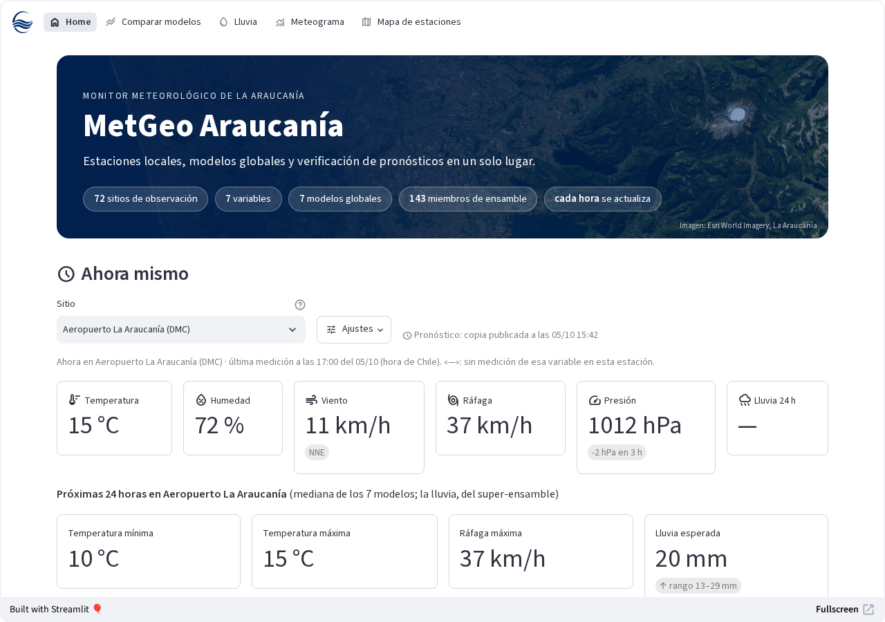
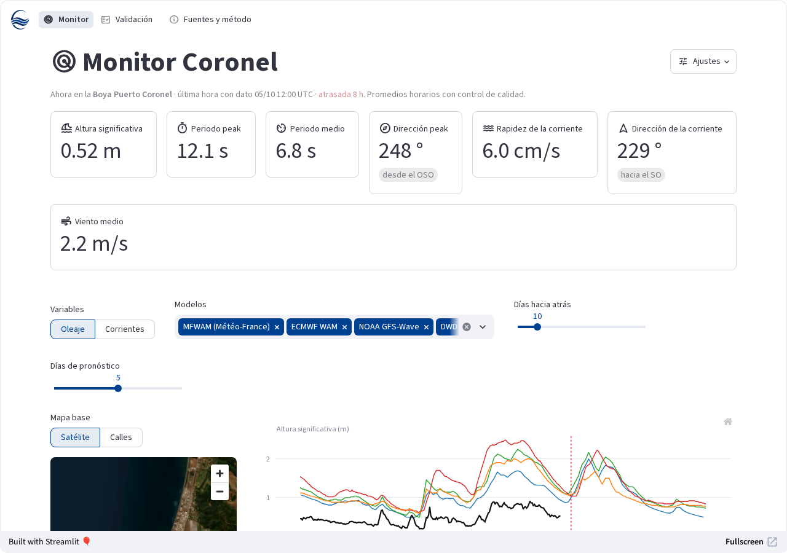

Monitores en línea
Lo observado frente a lo pronosticado, cada hora
Tres herramientas abiertas de MetGeo, desarrolladas por Bruno Herrera: dos monitores meteorológicos y uno oceanográfico, que comparan las mediciones reales con los modelos globales de pronóstico.

01 · Meteorológico
MetGeo Concepción
Lo observado en 17 sitios del Gran Concepción frente a lo que pronostican 7 modelos globales y un super-ensamble de 143 miembros, para lluvia, temperatura, humedad, viento, ráfagas y presión.
- Las condiciones de ahora y lo que viene en 24 horas
- Los 7 modelos frente a lo observado, con sesgo, MAE y RMSE
- Lluvia en mapa satelital, histograma horario y acumulado
- Meteograma y mapa con la última medición de cada estación
concepcion.metgeo.cl · Datos: VIPNet (DGA/MOP), METAR de NOAA Aviation Weather Center y Open-Meteo.

02 · Meteorológico
MetGeo Araucanía
La versión regional para La Araucanía: 72 sitios agrupados en costa, valle y cordillera, con los mismos 7 modelos globales y el super-ensamble de 143 miembros.
- 71 estaciones VIPNet y el METAR del aeropuerto La Araucanía
- Comparación de modelos con sesgo, MAE, RMSE y correlación
- Lluvia esperada cada 6 horas, con la ráfaga máxima
- Gráficos descargables en PNG y PDF
araucania.metgeo.cl · Datos: VIPNet (DGA/MOP), METAR de NOAA Aviation Weather Center y Open-Meteo.

03 · Oceanográfico
MetGeo Coronel
La boya de Puerto Coronel, en el golfo de Arauco, frente a los modelos oceánicos y de oleaje globales de acceso abierto: altura y periodo del oleaje, dirección y corrientes.
- Boya Sofar Spotter con ADCP, operada por la UdeC
- Oleaje: MFWAM, ECMWF WAM, NOAA GFS-Wave y DWD GWAM
- Corrientes: GLO12, GLORYS12, HYCOM ESPC y RTOFS
- Validación de cada modelo contra la boya
coronel.metgeo.cl · Datos: boya de Puerto Coronel (UdeC, publicada por el CDOM), Copernicus Marine, HYCOM, NOAA RTOFS y Open-Meteo Marine.
Si un monitor no se ha visitado en un tiempo, tarda unos segundos en despertar. Observaciones preliminares: son herramientas de divulgación y no reemplazan los avisos de SENAPRED, la DMC ni el SHOA.